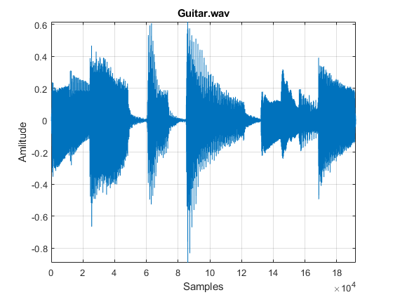
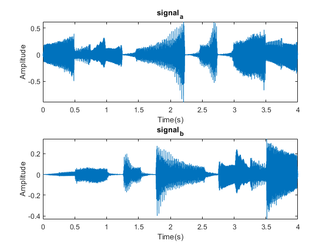

Contents
How to import audio data
audio_file = 'Guitar.wav'; % Save path to tha audio file to a string [signal, fs] = audioread(audio_file); % Read audio file to vector and its' sampling frequency to fs
Analysing audio signal in time domain
audioinfo(audio_file) % Prints information about a audio file figure(1) % New figure plot(signal) % Plot the mono audio signal to figure(1) grid on % Draws gridlines to the figure(1) xlabel('Samples') % Label the x-axis of the plot ylabel('Amlitude') % Label the y-axis of the plot title(audio_file) % Give a tittle to the plot axis([0 length(signal) min(signal) max(signal)]) % Zooms to the plot
ans =
struct with fields:
Filename: 'E:\Ali\Aalto University\Semester 4\Computer Lab in Digital Signal Processing\Assignment 1\Guitar.wav'
CompressionMethod: 'Uncompressed'
NumChannels: 1
SampleRate: 48000
TotalSamples: 192000
Duration: 4
Title: []
Comment: []
Artist: []
BitsPerSample: 16
 Playing audio signal
gain = 1; % Try different values to gain and see how it affect the played audio soundsc(gain*signal, fs) % Scales signal to 1 and plays it with correct sampling frequency %sound(gain*signal, fs) % Plays signal with original amplitude and sampling frequency
Task a) (replace 0 with a correct answer)
What is the sampling frequency of 'signal'?
sampling_frequency = 48000 % This is essentially the same as variable 'fs' % How long the 'signal' is in second? length_in_seconds = 4 % What are the maximum and minimum values of the 'signal' and corresponding % indexes that those values occur? signal_max = 0.6174 signal_min = -0.8911 signal_max_idx = 85970 signal_min_idx = 86080
sampling_frequency =
48000
length_in_seconds =
4
signal_max =
0.6174
signal_min =
-0.8911
signal_max_idx =
85970
signal_min_idx =
86080
Task b)
Generate a signal named 'signal_a' that is same as 'signal' but it is reversed and scaled to 1
signal_a = flipud(signal); gain = 1; % Try different values to gain and see how it affect the played audio soundsc(gain*signal_a, fs) %figure(2) % New figure %plot(signal_a) % Plot the mono audio signal to figure(2) %grid on % Draws gridlines to the figure(2) %xlabel('Samples') % Label the x-axis of the plot %ylabel('Amlitude') % Label the y-axis of the plot %title(audio_file) % Give a tittle to the plot %axis([0 length(signal_a) min(signal_a) max(signal_a)]) % Zooms to the plot
Task c)
Generate a vector that is equally long as 'signal' that grows linearly from 0 to 1 and element-wise multiply 'signal' with it to generate 'signal_b'. Scale 'signal_b' also to 1.
vector_b = linspace(0,1,192000); for i = 1:length(signal) signal_b(i) = signal(i)*vector_b(i); end gain = 1; % Try different values to gain and see how it affect the played audio soundsc(gain*signal_b, fs) %figure(2) % New figure %plot(signal_b) % Plot the mono audio signal to figure(2) %grid on % Draws gridlines to the figure(2) %xlabel('Samples') % Label the x-axis of the plot %ylabel('Amlitude') % Label the y-axis of the plot %title(audio_file) % Give a tittle to the plot %axis([0 length(signal_b) min(signal_b) max(signal_b)]) % Zooms to the plot
d)
Plot 'signal_a' and 'signal_b' to same figure but in different graphs using subplot() so that 'signal_a' is on top of 'signal_b' and y-axises are amplitude and x-axises are time in seconds. Name the plots and all axises. Also set the axises so that there is no unnecessary space in the plots.
time = (1:length(signal))/fs; figure(3) subplot(2,1,1) plot(time, signal_a), xlabel('Time(s)'), ylabel('Amplitude'), axis([0 4 min(signal_a) max(signal_a)]) title('signal_a') subplot(2,1,2) plot(time, signal_b), xlabel('Time(s)'), ylabel('Amplitude'), axis([0 4 min(signal_b) max(signal_b)]) title('signal_b')